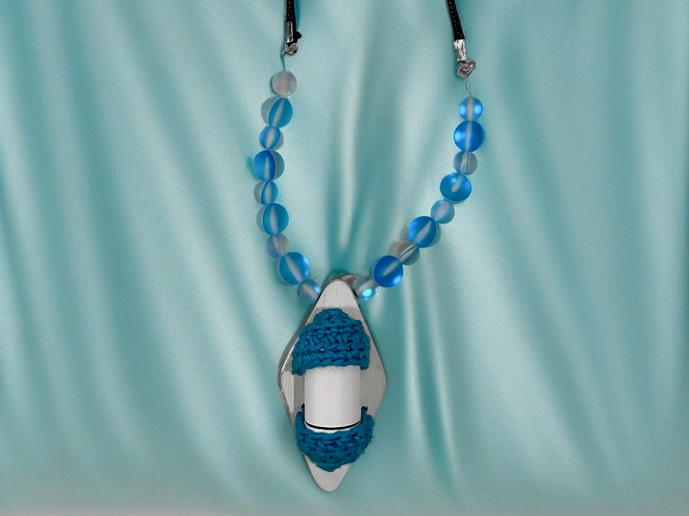

My Projects
Finished Projects
Heartmony
Time: Sept - Dec 2024
Type: Haptic Device
A haptic pendant redefining concerts for the deaf and hard of hearing.

AR Furniture Preview
Time: Apr - Jun 2023
Type: Mobile / AR
Utilized ARKit to help users preview furniture in real time, ensuring visual fit in different rooms.

On Going Projects
IoT Plant Monitor
Time: Sep - Dec 2023
Type: IoT / Web / Hardware
Building a plant health monitor with sensors and an intuitive web dashboard. Current focus: low-power data sync.

Pixel Social
Time: Ongoing
Type: Social / Pixel Art
A pixel-themed lightweight social platform. Aims to reduce complexity and create a playful environment.